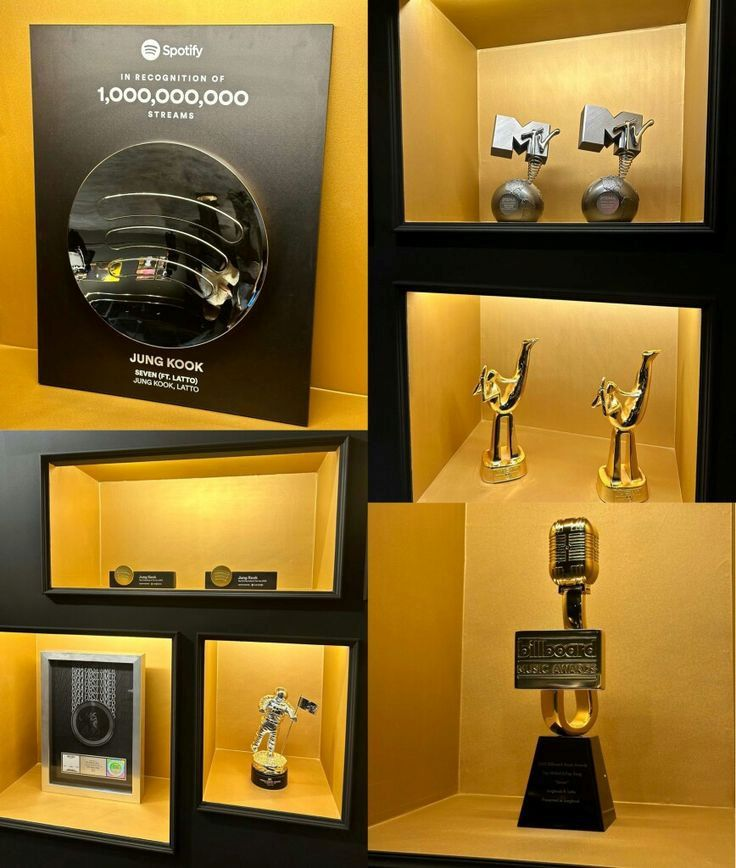
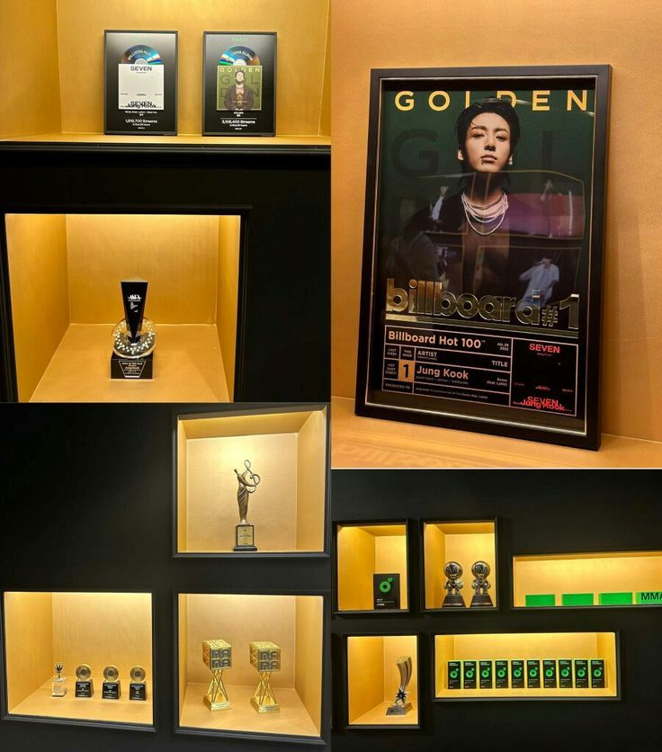
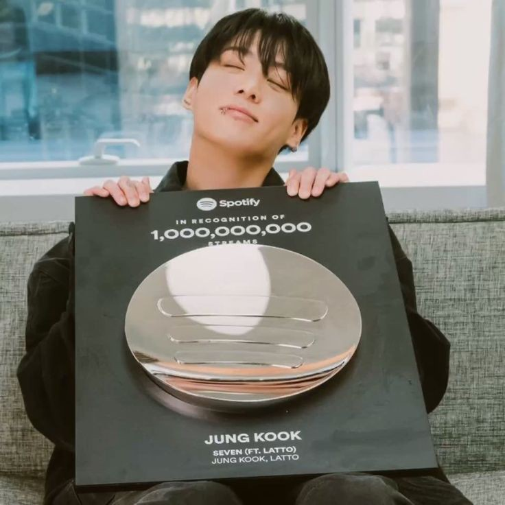
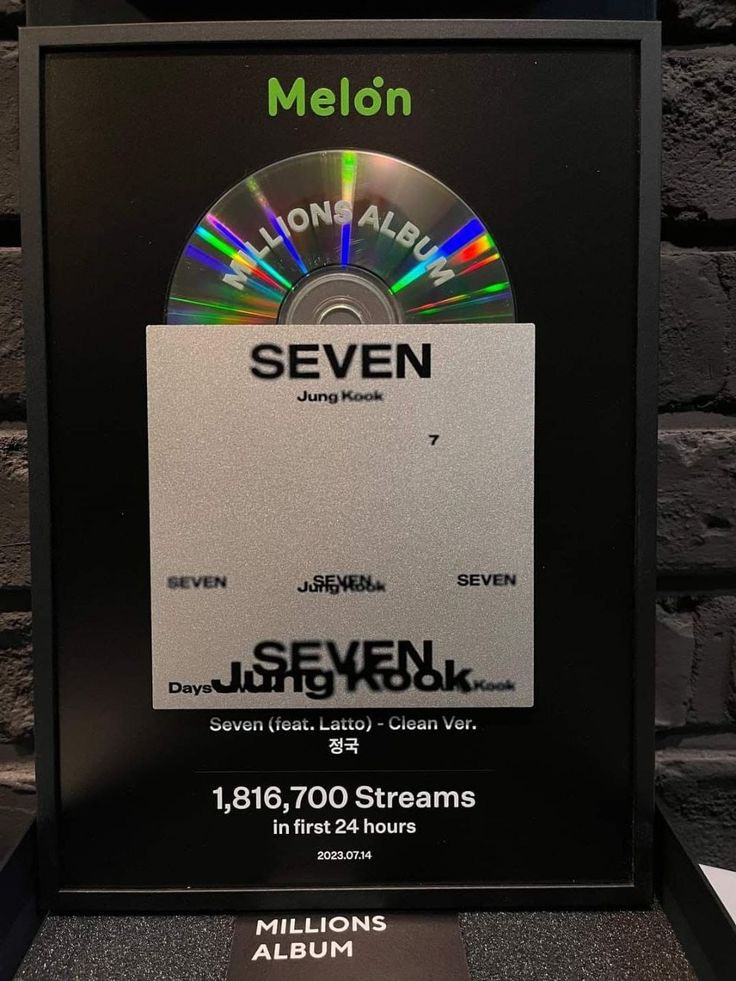

Since its release, Golden has broken records and earned critical acclaim worldwide. From topping global charts to sweeping awards shows, this page celebrates the album's remarkable achievements. Discover the milestones, streaming triumphs, and the many honors Jungkook has earned for this unforgettable album.
Awards & Honors
- Billboard Music Awards: Top Selling Album
- Mnet Asian Music Awards: Album of the Year
- Golden Disc Awards: Digital Song of the Year
- MTV Europe Music Awards: Best K-Pop
- Melon Music Awards: Artist of the Year
- American Music Awards: Favorite Pop Album


Streaming Records
- 1 Billion Streams on Spotify in the first month
- Most Streamed K-Pop Solo Artist in 2024

